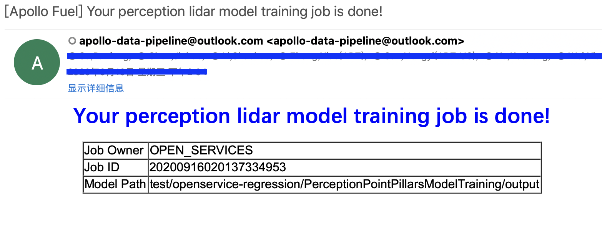

Open Perception Lidar Model Training Service¶
Overview¶
Open Perception Lidar Model Training Service is a cloud-based service to train perception lidar model using pointpillars algorithm from your data, to better detect obstacles in your environment.
Prerequisites¶
Apollo 6.0 or higher version.
Baidu Cloud BOS service registered according to document
Fuel service account on Apollo Dreamland
Main Steps¶
Data collection
Job submission
Model training result
Data Collection¶
Data Recording¶
Collecting sensor data from lidar and cameras in different scenarios covering your autonomous driving environment as much as possible, please make sure the scenarios have different types of obstacles such as pedestrians and vehicles. Then labeling the sensor data using kitti data format.
Data format¶
We use Kitti data format as training data format:
INPUT_DATA_PATH:
training:
calib
image_2
label_2
velodyne
testing:
calib
image_2
velodyne
train.txt
val.txt
trainval.txt
test.txt
Supported obstacle detection categories:
bus, Car, construction_vehicle, Truck, barrier, Cyclist, motorcycle, Pedestrian, traffic_cone
When labeling your data, `type` must be one of the above categories (please note the uppercase).
Job Submission¶
Upload data to BOS¶
Requirements of the folder structure for job submission：
Input Data Path: upload your data to INPUT_DATA_PATH directory.
Output Data Path: if the model is trained successfully, an onnx file will be saved to the OUTPUT_DATA_PATH directory.
Submit job on Dreamland¶
Go to Apollo Dreamland, login with Baidu account, choose Apollo Fuel --> Jobs，New Job, Perception Lidar Model Training，and input the correct BOS path as in Upload data to BOS section.
Model Training Result¶
Once a job is done, you should be expecting one email per job including the results and
Model Path.
